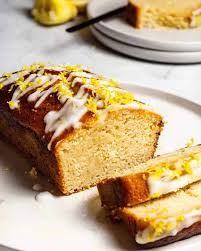

Lemon Loaf

Lemon loaf or lemon drizzle cake?
Both names would be correct. We like to make this zesty cake in loaf form,
as it travels well. With minimal -- or no -- frosting,
you can easily wrap it in plastic wrap for an easily transportable cake.
But, don't forget the drizzle. That's what gives this loaf such it's tart
and bright flavor. It's also what makes this cake so tasty...no frosting needed.
How to make the perfect lemon loaf
This cake is not only easy to transport, but fairly simple to make.
Ingredients
Cake
- 1 cup granulated sugar
- 2 lemons, zested
- 2 1/4 cup flour
- 1 1/2 teaspoon baking powder
- 1 teaspoon baking soda
- 1/4 teaspoon salt
- 1 cup butter, room temperature
- 4 large eggs
- 1/4 cup milk
Lemon drizzle
- 3/4 cup granulated sugar
- 1/3 cup fresh lemon juice
Method
- Put the sugar in a mixing bowl. Zest the lemons over the top.
Gently rub the zest into the sugar, releasing the oils and fragrance.
- Preheat the oven to 350 degrees F (180 degrees C). Grease and ine a loaf pan with parchment paper.
- Combine the flour, baking powder, baking soda, and salt in a small bowl. Set aside.
- Juice the lemons into the sugar and zest. Add the butter, and cream butter and sugar.
Crack in the eggs one at a time.
- Fold in half of the dry ingredients.
- Gently mix in the milk.
- Fold in the remaining flour, being sure not to overmix.
- Transfer the batter to the loaf pan, shaking to smooth.
- Bake until a toothpick inserted into the center comes out clean, about 50 minutes. Remove from the oven and let cool for 5 minutes in the pan.
- Meanwhile, combine the sugar and lemon juice for the drizzle in a small sauce pan.
Slowly heat over low heat, stirring, until the sugar desolves.
- After the cake has cooled for 5 minutes, use a toothpick or skewer to poke holes all over the cake.
Ladle the lemon drizzle topping all over the cake, allowing it to soak in.
- Let the cake finish cooling to room temperature before removing from pan. Serve plain or with berries.
 Enjoy this cake at home, or wrap it up to take out on a picnic!
Enjoy this cake at home, or wrap it up to take out on a picnic!